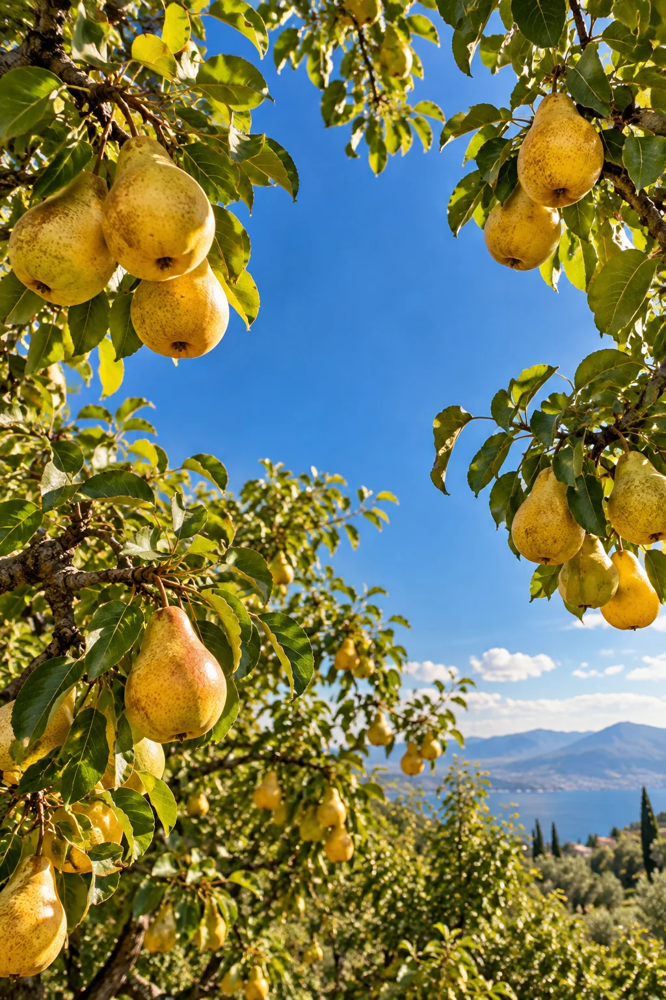
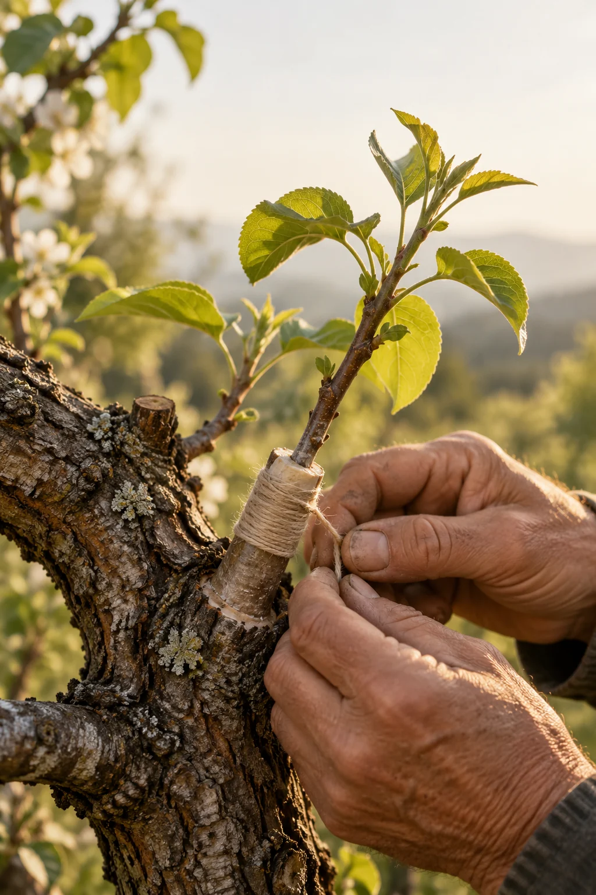
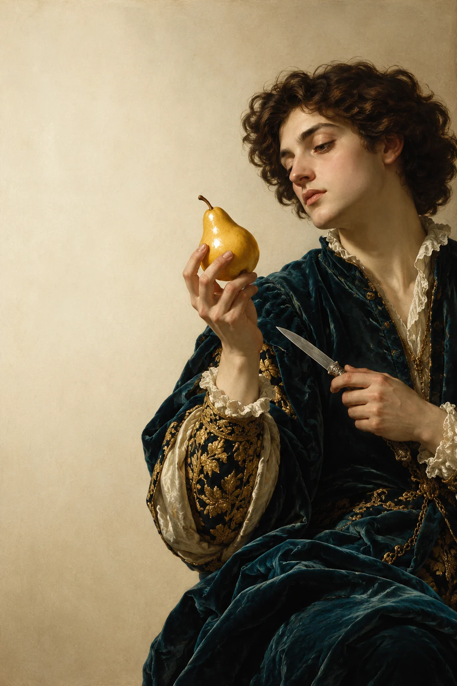

A little wonder grows here
Pear makes
you appear.
Follow the fruit. Find an idea. Make it yours.
ENTER THE STORYIt begins with a small gesture.
Made with
care.
An orchard starts with a patient hand, a living branch, and the belief that something beautiful can grow.
A new sprig meets an old branch.
Time, light, and attention do their work.
What began small becomes something to share.

A living little world
We build it
together.
Tap the glowing fruit and collect a little thought along the way.
An idea worth passing on
The best things
are shared.
One fruit can become a story, a gathering, or the beginning of an entirely new thought.
LOOK A LITTLE HIGHER
Every idea starts somewhere
What will you
make grow?
Touch the lights. Connect five little possibilities.
Take a little wonder with you
Make it
yours.
Write a thought for someone. Make a card, then share its link straight from your phone.
A little wonder— pear.PEAR / 2026
grows here.